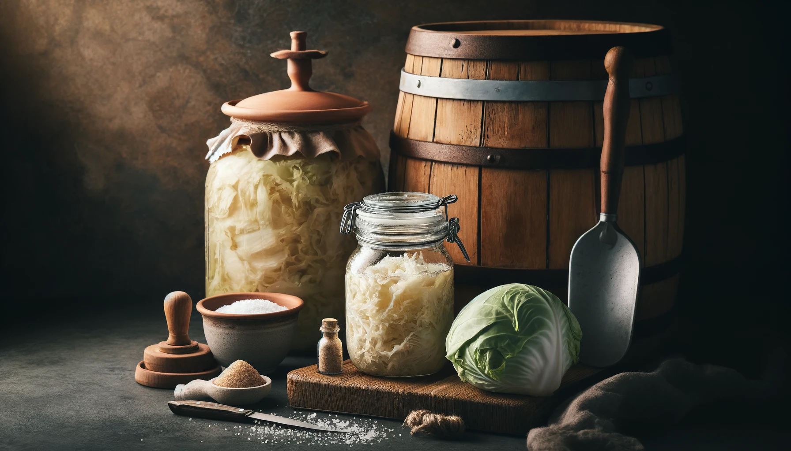

Sauerkraut

Hey hot summer! Feeling the heat? How about we ditch the processed snacks and whip up a batch of something delicious and refreshing? Sauerkraut!
Enjoy the distinct, tangy flavor that only homemade sauerkraut can provide.
ingredients
- 1 medium head of green cabbage (about 2-3 pounds)
- 1-2 tablespoons of non-iodized salt (such as sea salt or kosher salt)
Recipe Instructions
- Remove the outer leaves of the cabbage and set them aside.
-
Finely shred the cabbage using a sharp knife, mandoline, or food processor.
-
In a large bowl, combine the shredded cabbage and salt. Massage the cabbage with your hands for about 5-10 minutes until it releases its juices.
-
Add any optional ingredients if desired and mix well.
-
Pack the cabbage tightly into a clean glass jar, pressing down firmly so the liquid covers the cabbage.
-
Place one of the reserved outer leaves on top of the shredded cabbage to keep it submerged.
-
Cover the jar with a cloth or a loose-fitting lid and let it ferment at room temperature for 1-4 weeks, checking periodically to ensure the cabbage remains submerged in its liquid.
-
Once it reaches your desired level of fermentation, transfer the sauerkraut to the refrigerator to slow down the fermentation process.
Next Recipe: Kimchi
Previous Recipe: Kefir
Home